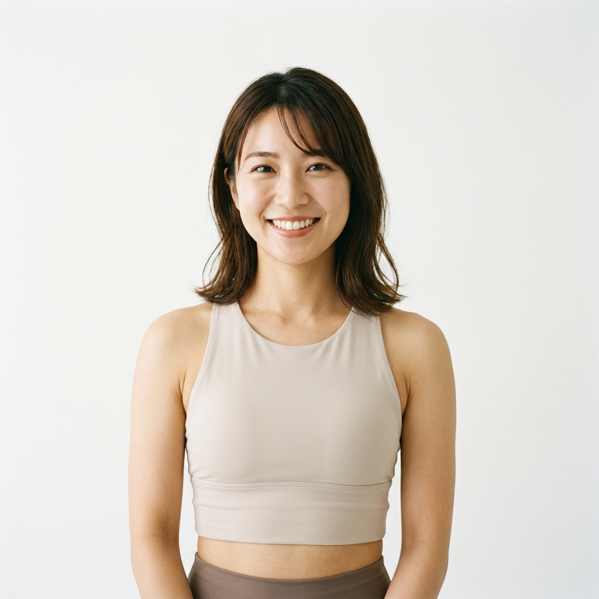

こんなお悩み、ありませんか？
40代を迎えた会社員の多くが感じている、体と時間にまつわる悩み。 一つでも当てはまるなら、それはBODY SHIFT Onlineで解決できます。
階段で息切れする
以前より疲れやすく、体力の衰えを日々の生活の中で感じている。
ジムに通う時間がない
仕事や家庭で毎日が忙しく、移動して通うジムは続けられない。
自己流ダイエットで挫折
これまで何度も自己流で挑戦したが、続かずリバウンドしてしまった。
何から始めればいいかわからない
正しい方法がわからず、結局何も始められないまま時間だけが過ぎている。
自宅にいながら、
プロの指導を受けられる。
BODY SHIFT Onlineは、自宅から専属トレーナーのマンツーマン指導が受けられる オンラインパーソナルトレーニングサービスです。移動時間はゼロ。 運動生理学・栄養学など科学的根拠に基づいて設計されたプログラムだから、 忙しい40代でも無理なく、着実に体が変わっていきます。
BODY SHIFT Onlineが選ばれる理由
忙しい40代でも無理なく続けられるよう、サービス設計そのものにこだわっています。
専属トレーナー制
担当が変わらないから、体調やクセを理解した的確な指導が受けられる。
科学的根拠に基づく設計
運動生理学・栄養学の知見をもとに、一人ひとりに合わせたプログラムを作成。
1回30分から
朝の支度前や仕事の合間など、隙間時間で無理なく完結できる。
食事サポート付き
トレーニングだけでなく、無理のない食事管理もあわせてサポート。
あなたを支える専属トレーナー
知識と経験豊富なトレーナーが、あなたの目標達成まで伴走します。
田中 健太
大手フィットネスクラブでの指導経験を活かし、40代の体づくりを得意とする。落ち着いた指導で信頼度が高い。

佐藤 美咲
運動初心者への指導を専門とし、明るく前向きな雰囲気で継続をサポート。食事アドバイスにも定評あり。
鈴木 大輔
体の使い方や姿勢改善を専門知識に基づいて指導。ケガのリスクを抑えながら安全に体を変えていく。
お客様の変化と声
同じ悩みを抱えていた40代の会社員が、どのように変わったのか。 実際の成果と生の声をご紹介します。
「3ヶ月で-6kg。何より階段の息切れがなくなったのが一番嬉しいです。 オンラインだから移動がなく、仕事終わりでも無理なく続けられました。」
「自宅でできるからこそ続けられました。トレーナーさんが毎回同じ方なので、 自分の体の変化をちゃんと理解してくれているのが安心でした。」
「気づけば会議中にズボンがゆるくなっていました。自己流で何度も挫折してきたので、 プロに任せて正解でした。」
相談だけでもOK。強引な勧誘は一切ありません。
料金プラン
ライフスタイルに合わせて選べる3つのプラン。まずは無料カウンセリングでご相談ください。
しっかり結果を目指したい方に
- 週2回・30分のオンライン指導
- 専属トレーナー制
- 食事アドバイス付き
- チャットでの相談（毎日）
最短で、着実に変わりたい方に
- 週3回・30分のオンライン指導
- 専属トレーナー制
- 食事アドバイス・体組成分析付き
- チャットでの相談（毎日・優先対応）
よくある質問
無料カウンセリングに申し込む
下記フォームに必要事項をご入力の上、送信してください。 担当より1〜2営業日以内にご連絡いたします。
送信が完了しました
お申し込みありがとうございます。担当より1〜2営業日以内にご連絡いたします。